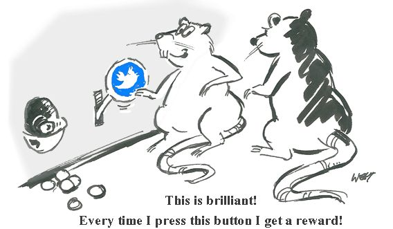

Introduction to Behaviourism
Behaviourism is a school of thought that operates on a principle of a "stimulus-response". It postulates that all behaviour is caused by external stimuli (operant conditioning). It was the primary paradigm in psychology between 1920s to 1950 and is based on a number of underlying assumptions regarding methodology and behavioural analysis. Behaviourism assumes that a learner is essentially passive, responding to environmental stimuli.The learner stats off as a clean slate (i.e. tabula rasa) and behaviour is shaped through positive reinforcement or negative reinforcement.
All behaviour can be explained without the need to consider internal mental states or consciousnesses.
There is little difference between the learning that takes place in humans and that in other animals. Therefore research can be carried out on animals as well as humans. In essence, it states that people have no free will – a person’s environment determines their behaviour.
There is little difference between the learning that takes place in humans and that in other animals. Therefore research can be carried out on animals as well as humans.
Below is provided a timeline of all the major discoveries and achievements that created and influenced behaviourism. To learn more about a topic simply click expand.
Timeline of the Theory
Ivan Pavlov ((1897) published the results of an experiment on conditioning after originally studying digestion in dogs.
Thorndike (1905) formalized the "Law of Effect", which stated that any behaviour that is followed by pleasant consequences is likely to be repeated, and any behaviour followed by unpleasant consequences is likely to be stopped.
In 1913, John Broadus Watson published his article "Psychology as the Behaviorist Views It", through which he launched the behavioral school of psychology (classical conditioning).
Using behaviorism principles, Watson and Rayner (1920) conditioned an orphan called Albert B (aka Little Albert) to fear a white rat.
Burrhus Frederic Skinner wrote "The Behaviour of Organisms" (1936) and properly introduced the concepts of operant conditioning and shaping, based on the work of Thorndike.
Clark Hull’s (1943) "Principles of Behaviour" was published.
Albert Bandura (1963) published a book called the "Social Leaning Theory and Personality development" Also performed the now famous "Bobo doll experiment" which investigated if social behaviors (i.e. aggression) can be acquired by observation and imitation.
B.F. Skinner (1971) published his book Beyond Freedom and Dignity, in which the promoted the idea that free will is an illusion.